Select
Choose the folders and connected drives where your videos already live.
Private video library
Thousands of personal videos disappear into forgotten folders, old drives, and filenames that no longer mean anything. LocalStream transforms the videos already on your computer into a beautiful, private library you can browse, organise, and enjoy again.
No account. No uploads. Your videos stay on your device.
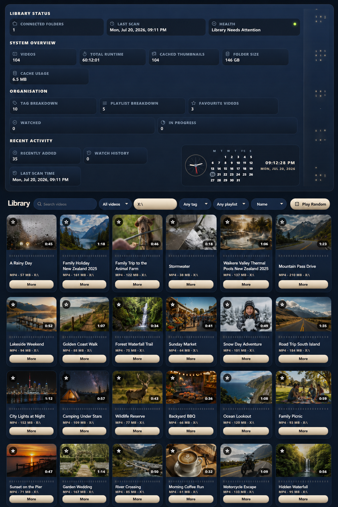
They are birthdays, holidays, first steps, road trips, family voices, old homes, favourite pets, and people as you remember them.
When videos become too difficult to find, those moments quietly disappear from everyday life.
From clutter to clarity
LocalStream replaces endless folders and meaningless filenames with a visual library built around recognition. Browse thumbnails, preview moments, organise collections, and return to the videos that matter.
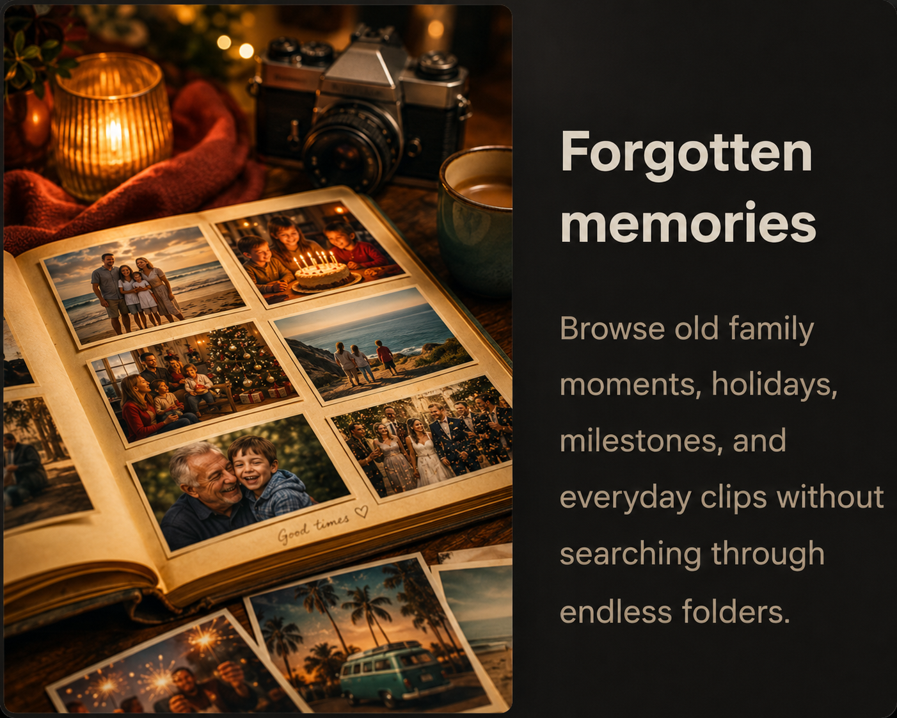
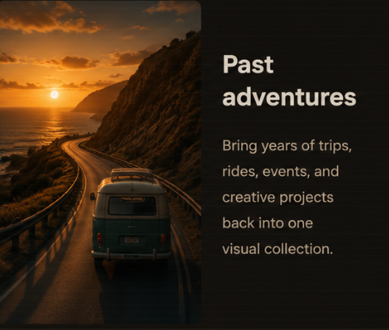
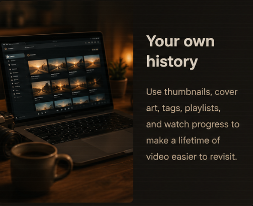
Walkthrough
A better way
Choose the folders and connected drives where your videos already live.
Automatic thumbnails and preview frames reveal what is inside each video.
Use tags, playlists, favourites, titles, cover art, and filters in ways that match how you remember things.
Find forgotten moments, continue watching, and enjoy your collection again.
Every collection has a story
Family videos, travel, creative work, concerts, sport, learning, gaming, social content, and personal viewing all become easier to recognise and enjoy when they live in one visual library.
Recognise before you open
LocalStream generates multiple preview frames for each video, helping you recognise people, places, and moments without opening files one by one.
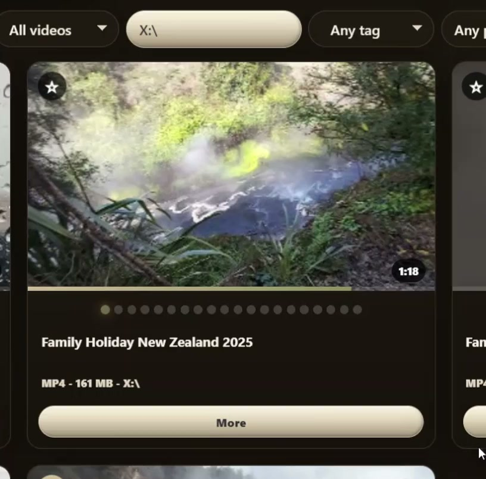
Built for returning to your videos
LocalStream gives personal video collections the tools they need to remain easy to browse, understand, revisit, and move to another computer without rebuilding everything from scratch.
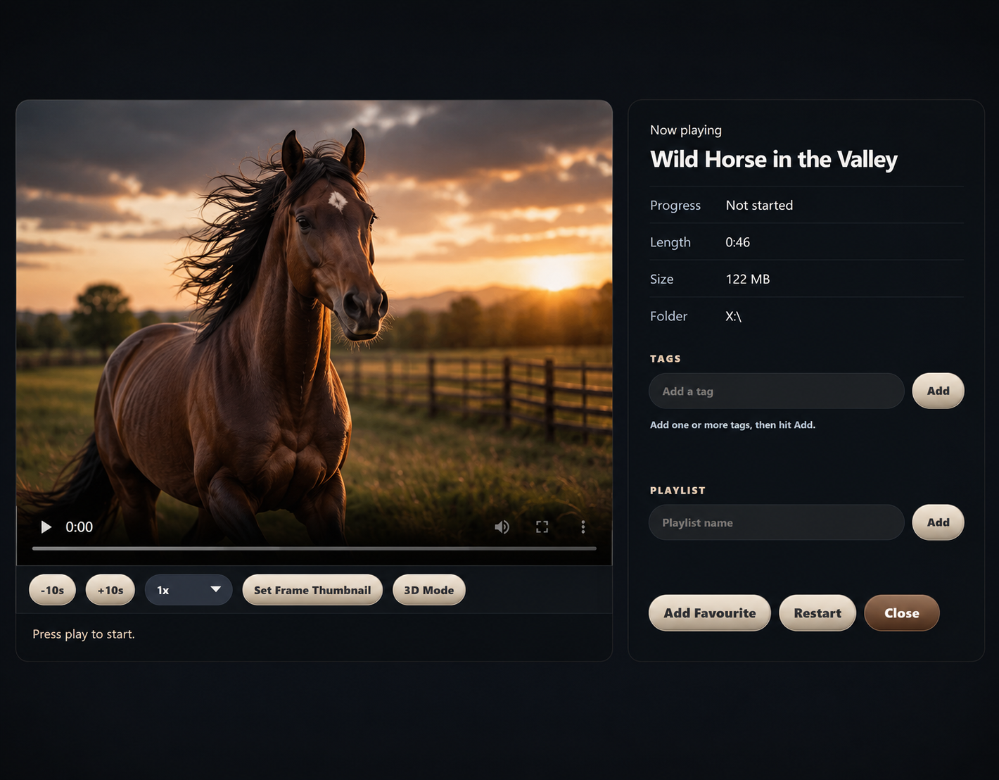
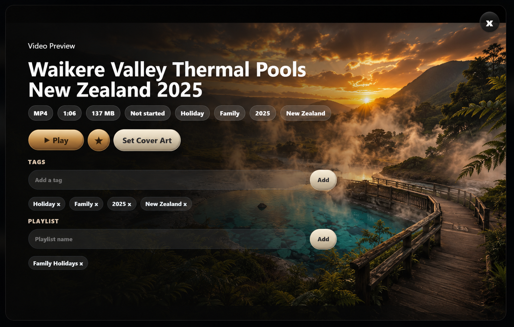
What makes the difference
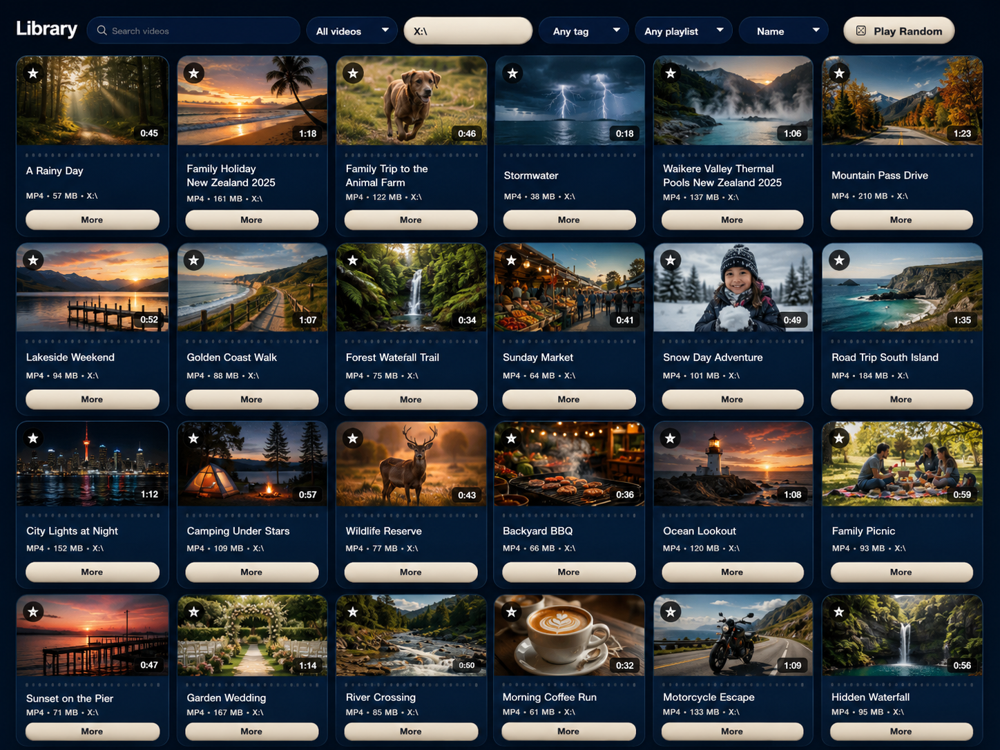
Turn folders and connected drives into a searchable visual shelf. Browse videos in one place, save progress, build playlists, add tags, and keep important clips close.
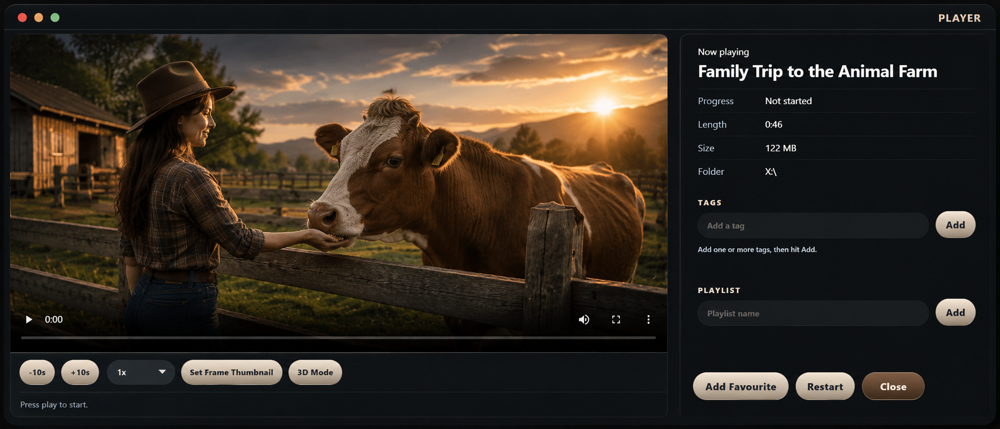
See what is inside a video before pressing Play. Generated thumbnails, preview frames, hover navigation, custom cover art, and cinematic backdrops make large collections easier to understand.
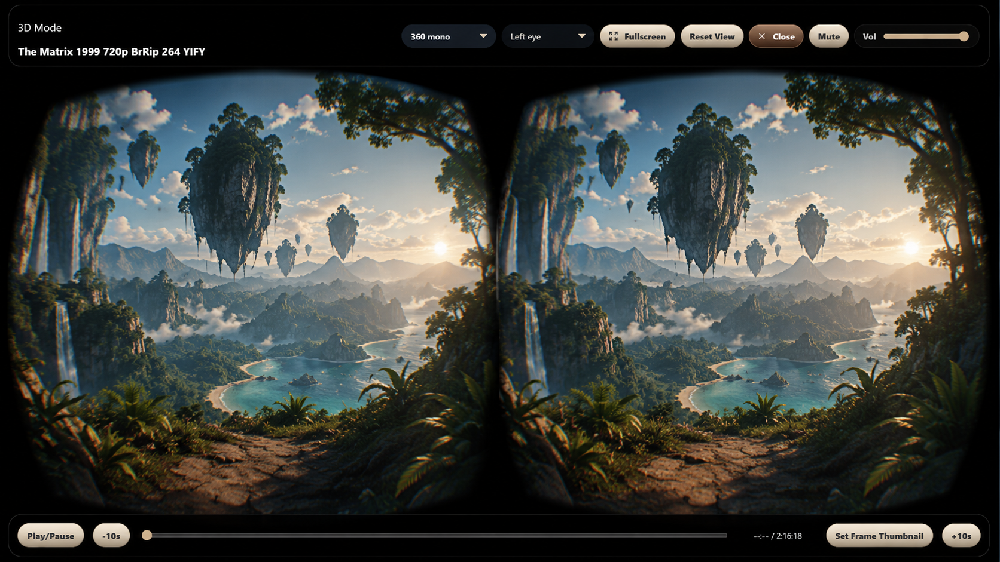
Back up your supported LocalStream library organisation, restore it on another computer after moving PCs or reinstalling, and avoid rebuilding your setup from scratch. Your original video files stay separate and must be copied or connected separately.
Built around how people remember
You may not remember where a video is stored or what it was called, but you will recognise the people, places, and moments inside it. LocalStream uses visual browsing, previews, tags, playlists, cover art, and local metadata to make that recognition easier.
Less searching. Less mental clutter. More confidence that the moments you care about are still within reach.
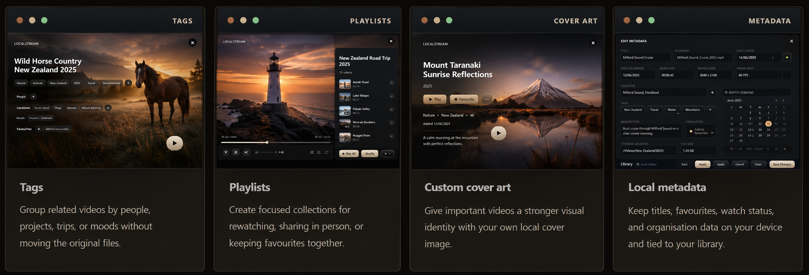
Make it feel like your library
Choose from eight carefully designed themes while keeping the same familiar LocalStream layout and organisation.
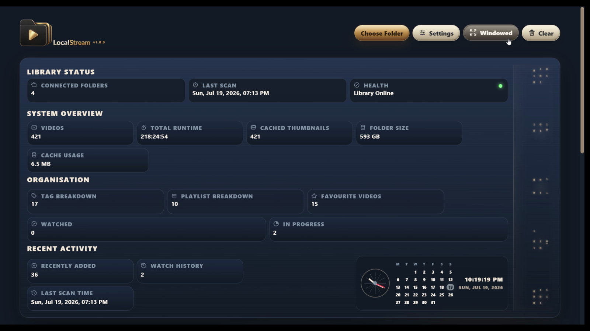
Private by design
LocalStream works directly with folders and connected drives selected by you. Your videos are not uploaded, no account is required for the desktop workflow, and your collection remains under your control.
LocalStream is not a streaming service and not a media server. It is designed around local storage, so the videos you already own stay where they are while your library becomes easier to use.
Why folders stop working
Stores files reliably, but large collections become difficult to recognise, browse, organise, and revisit.
Powerful for network streaming, but they often require server setup, account management, and ongoing configuration.
Easy to browse, but designed around someone else’s catalogue rather than the videos you already own.
Turns your own folders and connected drives into a private visual library with thumbnails, search, organisation, progress, playlists, and local control.
Start free
LocalStream Free lets you explore the full library experience with a small collection. LocalStream Pro unlocks larger libraries and additional tools with a one-time licence.
LocalStream Free
Free
A complete way to experience LocalStream with a small collection.
LocalStream Pro
NZD$42.99 one-time
For larger libraries, multiple folders, backup and restore, supported 3D viewing, and advanced tools.
After purchase, Lemon Squeezy sends your licence key by email.
Questions
Yes. LocalStream Free supports small libraries of up to 20 videos and includes local playback, thumbnails, search, organisation tools, watch progress, favourites, tags, and playlists.
LocalStream Pro unlocks unlimited videos, multiple library folders, backup and restore for moving your library setup between computers, supported 3D and VR playback, extra thumbnail and preview tools, tools for finding and reconnecting moved videos, and updates for the current major version.
Yes. LocalStream Pro lets you back up your supported LocalStream library organisation and restore it on another computer. Your original video files are not included in that backup, so they must be copied, connected, or otherwise available separately.
No. LocalStream Pro is a one-time software licence.
LocalStream Free supports up to 20 videos. If you want to grow beyond that, LocalStream Pro unlocks unlimited videos.
No. LocalStream is designed around local folders and connected drives selected by you.
No account is required to use the desktop app.
Yes. LocalStream can work with user-selected folders on connected drives. The drive must be connected for those video files to play.
No. It is a desktop library app, not a server setup for streaming across a network.
Yes. It is suitable for personal collections, home videos, project clips, and local media folders.
Yes. LocalStream includes custom cover art tools for videos in your local library.
The library can still show organisation data, while files on that drive will need the drive reconnected to play.
Yes. LocalStream Pro includes export and import tools for supported organisation data.
LocalStream is designed to make large local collections easier to browse and organise. Performance will depend on the number and size of files, the speed of the connected storage, available system resources, and the formats being used.
Support depends on the desktop playback stack, installed codecs, and the video format. Common supported formats will provide the most reliable experience.
Your videos are waiting
Turn the videos already stored on your computer into a private, visual library you will want to explore again.
Free for libraries of up to 20 videos. No account required. No uploads.